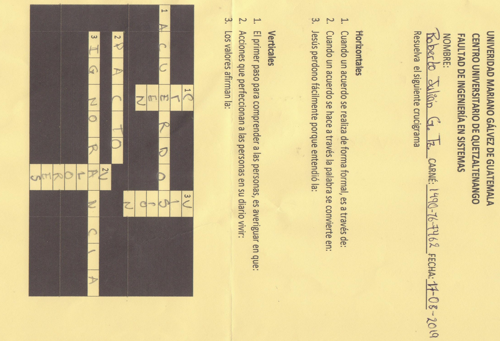
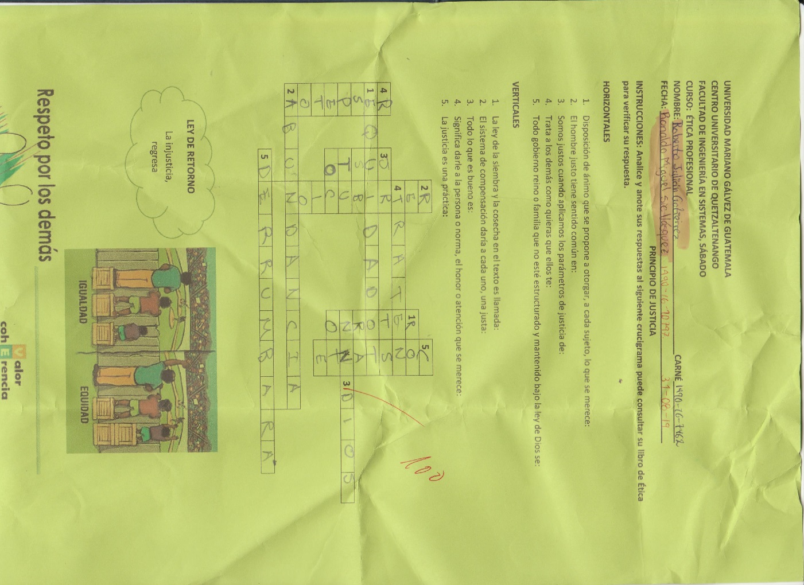
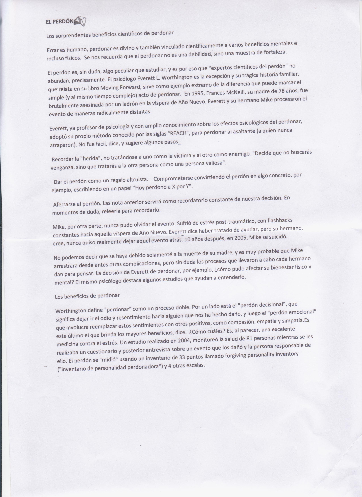

Trabajo Etica
Ingeniería en sistemas.
Ética profesional
Roberto Julian Gutierrez
1490-16-7462
Principio de Confiar en Dios
"Encomienda tu obra al Señor, y tendras exito."
Confianza
Confiar en Dios significa confiar en él, creer en lo que es capaz de hacer; ver el furuto con esperanza, sentise seguro con él, esperar a que las oportunidades se presenten.Principio de confiar en Dios
Podemos tener absoluta confianza en Dios porque:
Confiamos en Dios al ponerlo todo bajo su cuidado, su Sabiduria y fidelidad para hacer esto debemos conocerlo profundamente. Dios nos ha amado con un amor sin limites, por lo tanto, tiene derecho a una total confianza de nuestra parte.
Continuacion...
Reflexiones

Continuacion...
Principios.
Personaje Relacionado con el Principio
Jerry Anderson
Hombre exitoso que a confiado en Dios.Principio de Integridad
"El que camina en integridad anda confiado; más el que pervierte sus caminos será quebrantado."
Honradez
Una persona integra no se deja influenciar por la presión social, el qué dirán los demás. Desarrolla disciplina y responsabilidad como parte de su fortaleza interior.Principio de Integridad
La integridad es un valor que se encuentra en terrible decadencia porque la gente cuando toma decisiones lo hace por alguna de estas 3 razones:
"La integridad personal es como una espada: no deberia blandirse hasta el momento de ponerla a prueba"
Continuacion...
Reflexiones
Continuacion...
Principios.
Personaje Relacionado con el Principio
Billy Graham
Fundo la Asociacion Evangelistica Billy Graham, tuvo varios programas.
Principio de Empoderamiento
"Porque a cualquiera que tuvier, le sera dado, y tendra mas, y al que no tuviere, aun lo que tuviere, aun lo que tiene se le quitara"
Conviccion
El emproderamiento puede ser visto desde diferentes perspectivas, que incluyen: lo individual y lo colectivo, la ciencia de direccion de empresas y la ciencia de la motivacionPrincipio de Empoderamiento
Sea cual sea la fuente por la cual se empodera un individuo, el desarrollo de este valor crece en las personas, evidenciado las siguientes caracteristicas:
"Ventajas del empoderamiento"
Continuacion...
Reflexiones
Continuacion...
Principios.
Personaje Relacionado con el Principio Winston Churchill
Fue militar que lucho en la guerra de Turquia y Grecia, estuvo como pricionero de gerra, tuvo acciones que lo llevaron hacer visto como un heroe de Guerra.ACTIVIDADES

ACTIVIDADES

